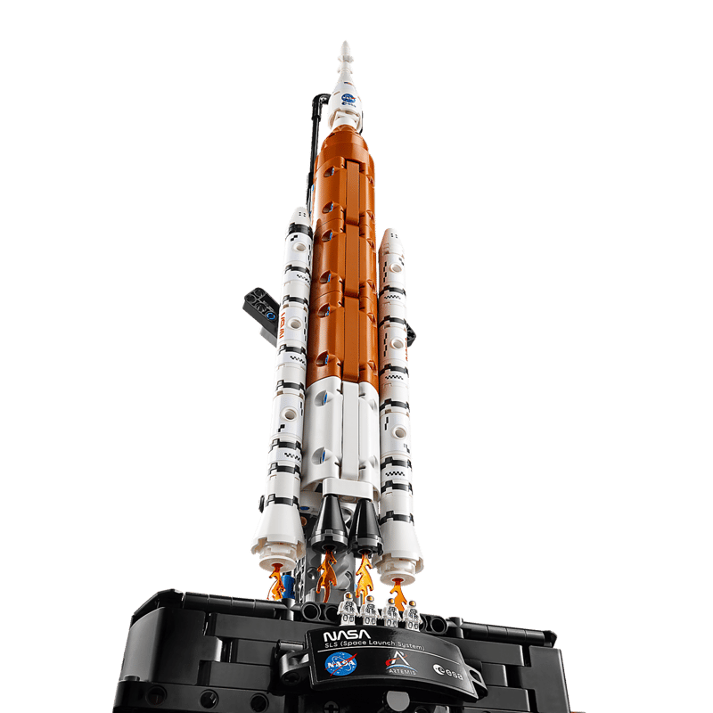
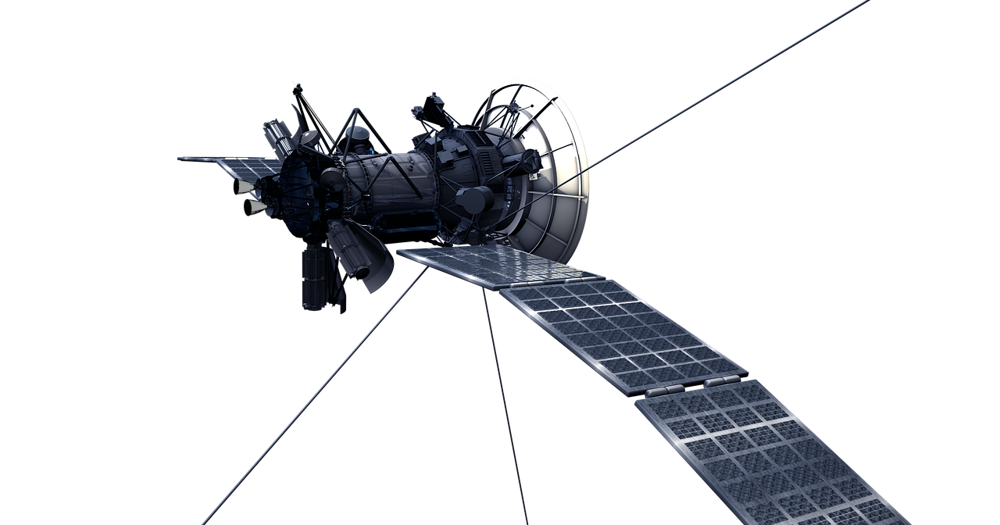
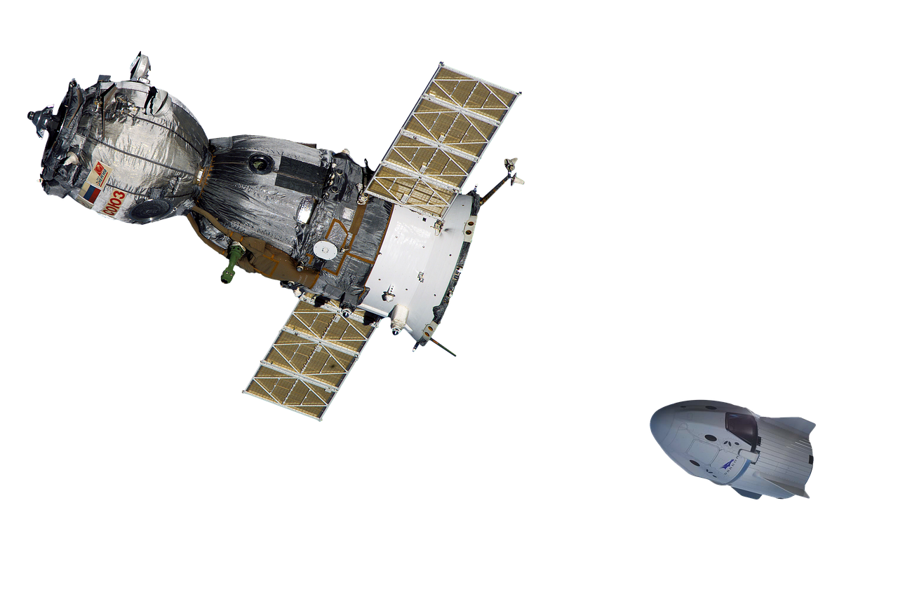
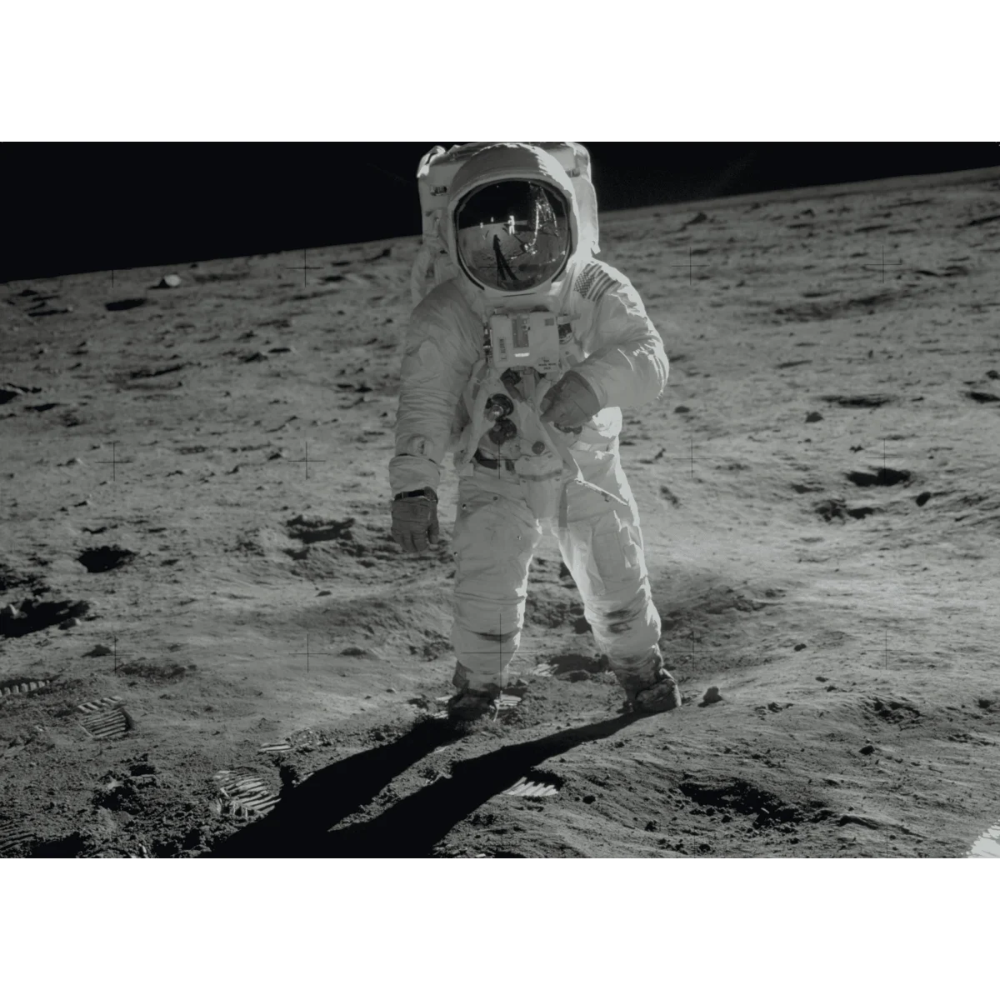
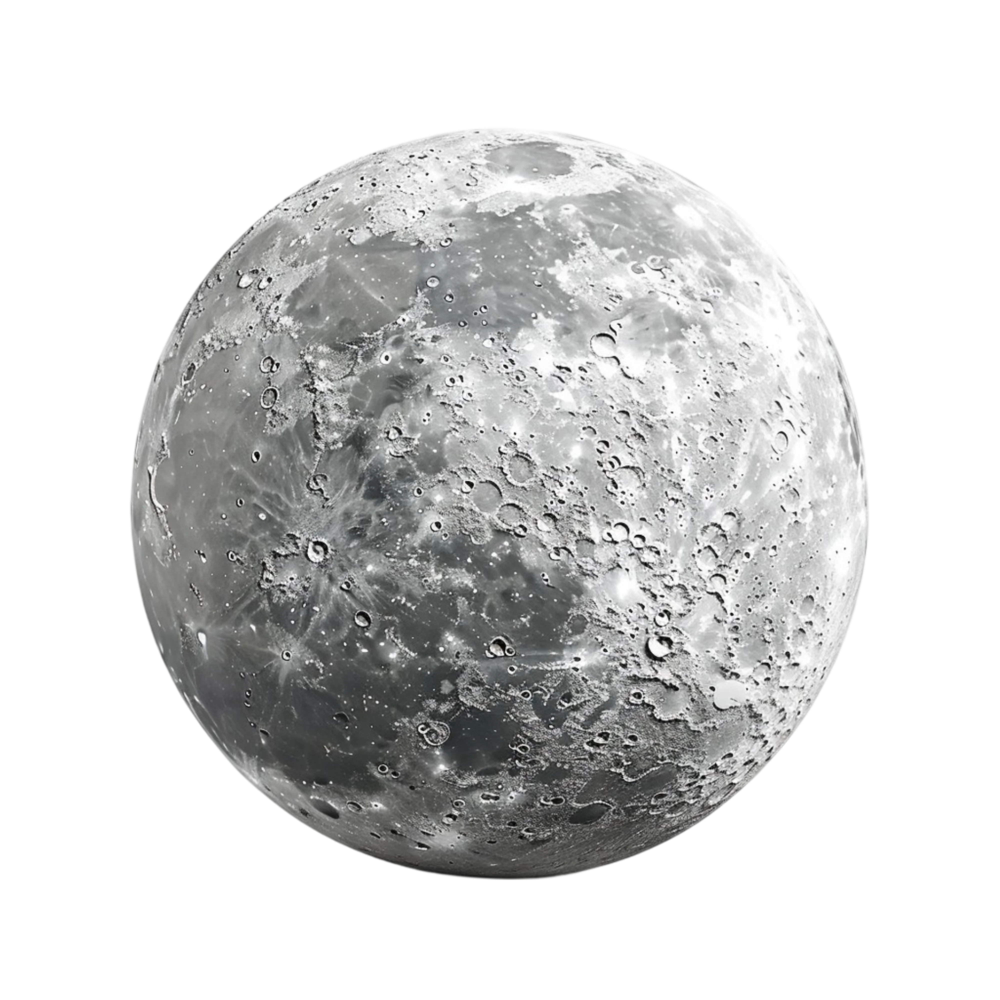
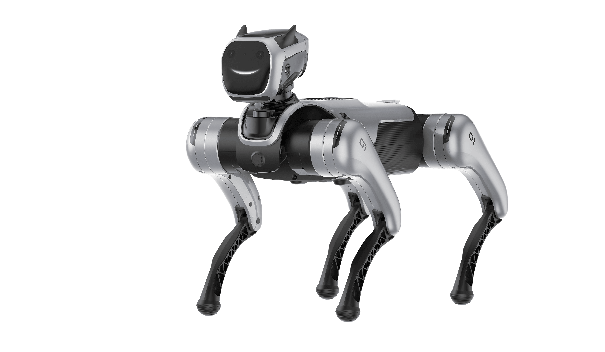
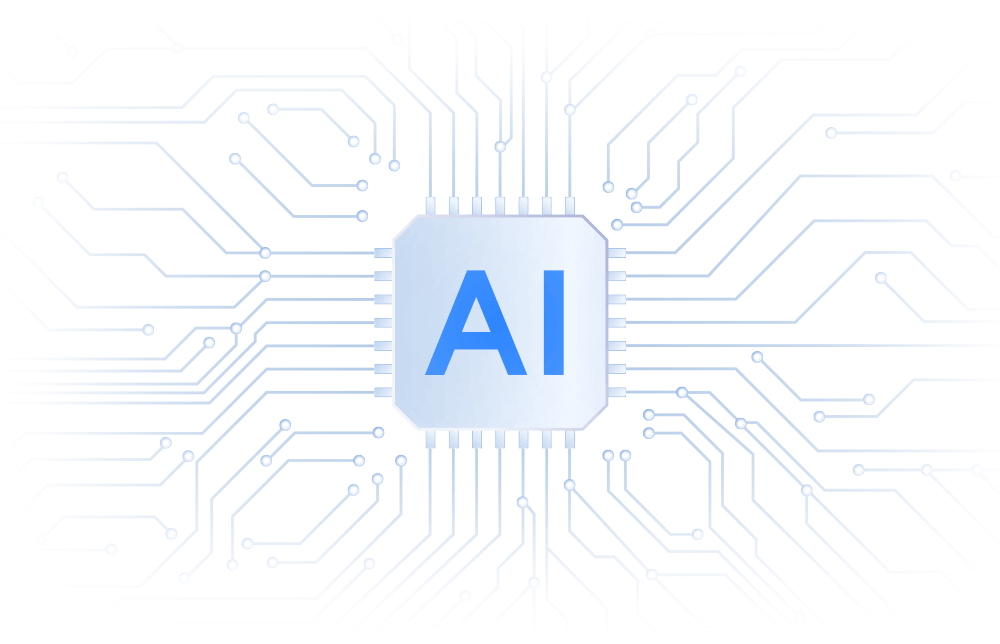
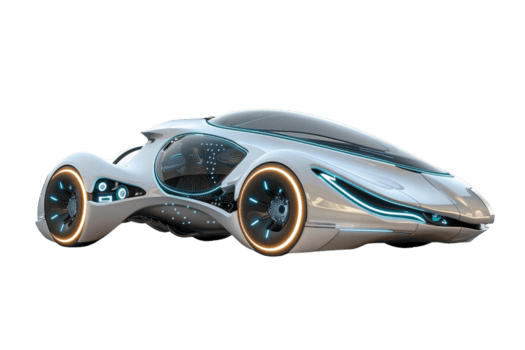
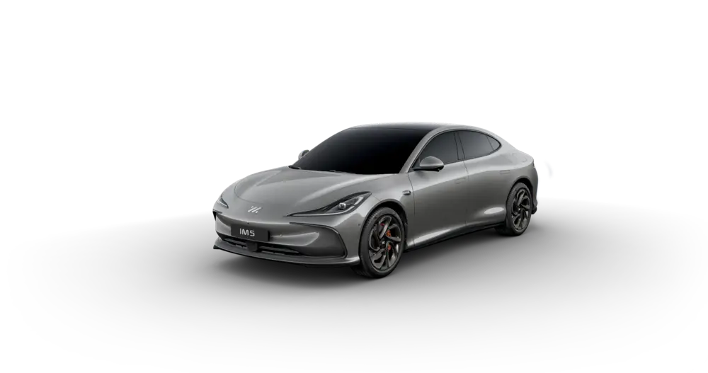

Raketten worden gebruikt om mensen en satellieten de ruimte in te sturen en maken ruimtevaart mogelijk.


Satellieten draaien rond de aarde en helpen bij communicatie, gps en het voorspellen van het weer.


De eerste maanlanding was een historisch moment waarbij mensen voor het eerst op de maan liepen.


Robots worden gebruikt om gevaarlijke taken uit te voeren, zowel op aarde als in de ruimte.


Kunstmatige intelligentie maakt het mogelijk voor computers om te leren en zelfstandig beslissingen te nemen.


Innovaties zoals elektrische auto’s en nieuwe technologieën veranderen de manier waarop we leven en werken.
